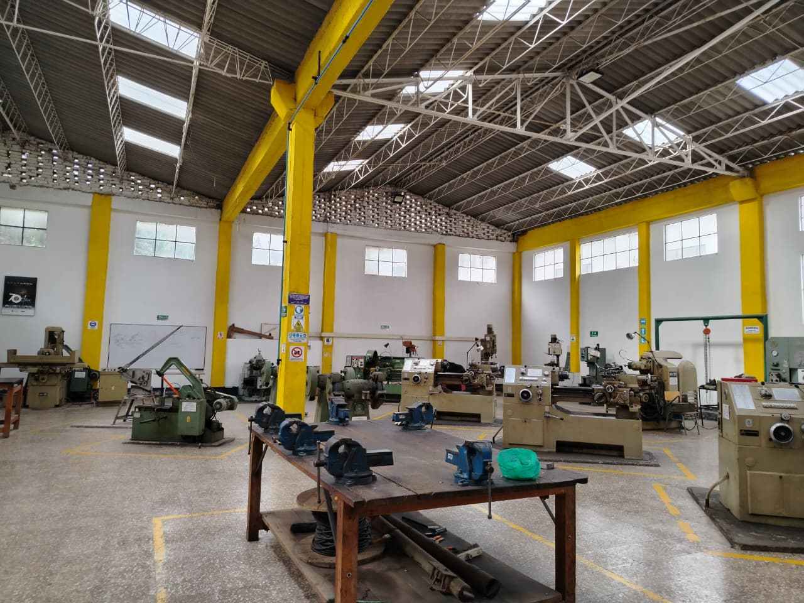
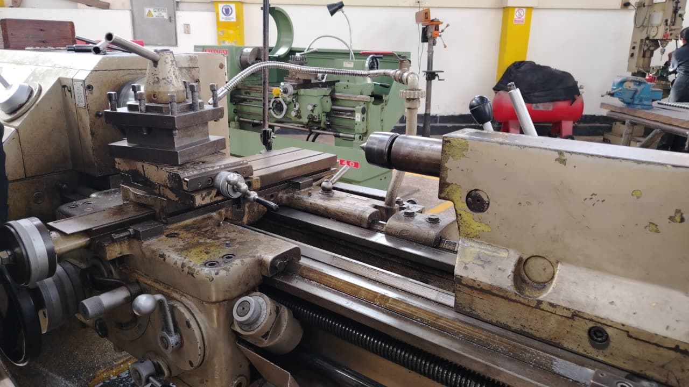
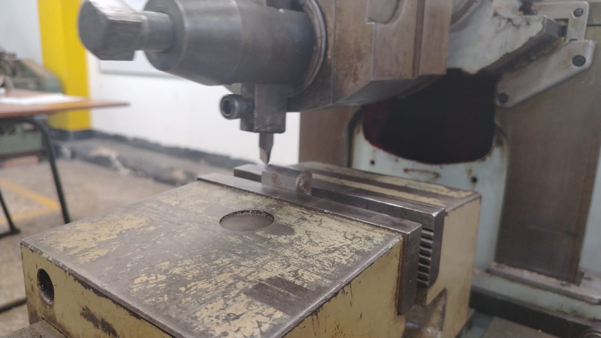

LICENCIATURA EN TECNOLOGÍA
LICENCIATURA EN TECNOLOGÍA
2. Taller de Metalmecánica


¿Qué es un taller de Metalmecánica en la UPTC?

Un taller de Metalmecánica de la Universidad Pedagógica y Tecnológica de Colombia (UPTC) es un espacio de formación práctica donde los estudiantes aprenden a trabajar, transformar y dar forma a diferentes materiales metálicos, utilizando máquinas, herramientas e instrumentos de medición.
La finalidad es que los estudiantes no solamente conozcan las máquinas desde la teoría, sino que también comprendan cómo funcionan, para qué sirven y cómo se pueden utilizar en procesos de fabricación.
En el taller se aprende a:
- Reconocer las diferentes máquinas y sus funciones.
- Identificar los materiales y sus propiedades.
- Medir y verificar las dimensiones de las piezas.
- Realizar operaciones de mecanizado.
- Interpretar planos y medidas.
- Comprender los procesos de fabricación de objetos y componentes.
Máquinas que se utilizan en el taller
Estas son algunas de las máquinas que se utilizan en el taller:
Taladro de árbol

El taladro de árbol es una máquina utilizada para realizar perforaciones en diferentes materiales, especialmente metales. Su funcionamiento consiste en hacer girar una broca que desciende sobre la pieza para producir un agujero.
¿Qué se puede hacer con el taladro de árbol?
- Taladrado: realizar agujeros en piezas metálicas.
- Perforaciones de diferentes diámetros: cambiar la broca para obtener agujeros de distintos tamaños.
- Avellanado: preparar la entrada de un agujero para alojar la cabeza de determinados tornillos.
- Escariado: mejorar la precisión y el acabado de un agujero previamente realizado.
Torno

El torno es una máquina herramienta que permite dar forma a piezas metálicas mediante el movimiento giratorio de la pieza de trabajo y una herramienta de corte que retira material.
Se utiliza principalmente para fabricar piezas cilíndricas y de revolución.
¿Qué se puede hacer con el torno?
- Cilindrado: reducir el diámetro de una pieza para dejarla uniforme.
- Refrentado: trabajar la cara frontal de una pieza para dejarla plana.
- Taladrado: realizar agujeros en el centro de una pieza.
- Roscado: formar roscas para permitir la unión con tornillos o tuercas.
- Tronzado: separar una parte de la pieza mediante una herramienta de corte.
Limadora

La limadora es una máquina herramienta que se utiliza para trabajar superficies metálicas, principalmente planas. Su funcionamiento se basa en un movimiento de avance y retroceso de una herramienta de corte que va retirando pequeñas cantidades de material.
¿Qué se puede hacer con la limadora?
- Limado de superficies planas: dejar una cara metálica uniforme.
- Elaboración de ranuras: formar canales sobre una superficie.
- Realización de escalones: obtener diferentes niveles o alturas en una pieza.
- Mecanizado de superficies inclinadas: trabajar caras con determinados ángulos.